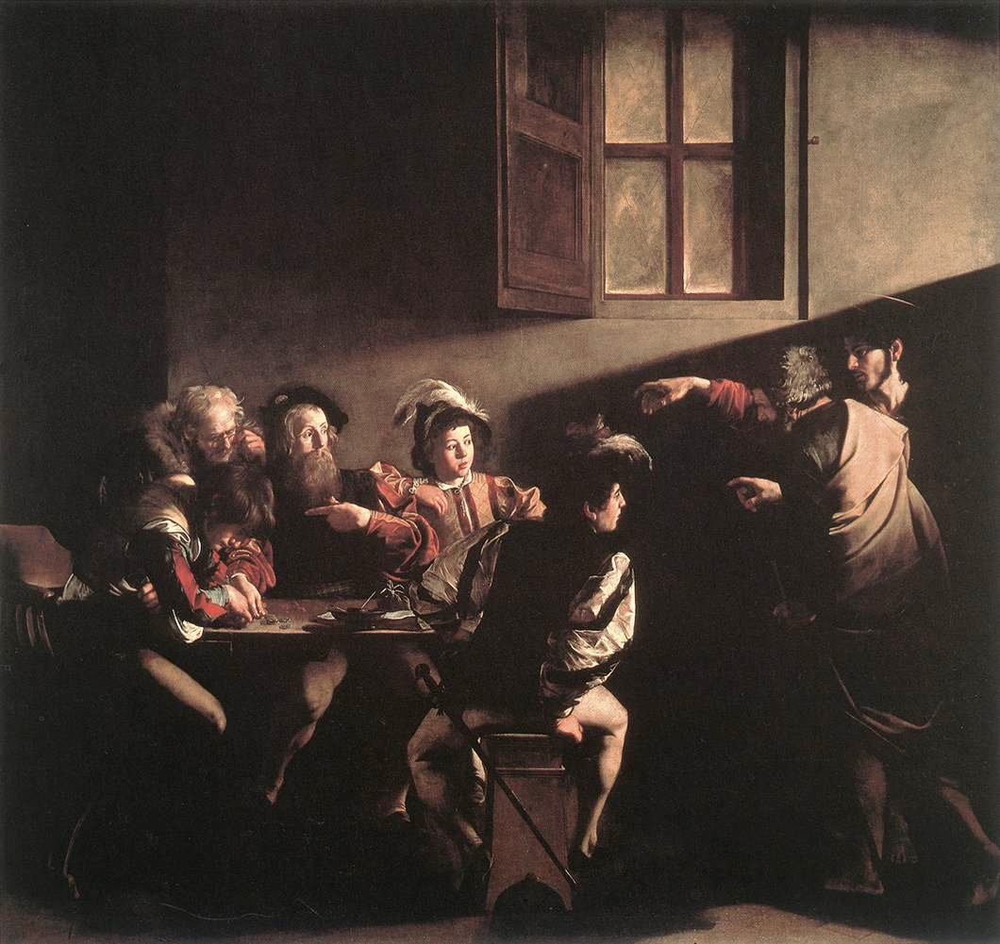
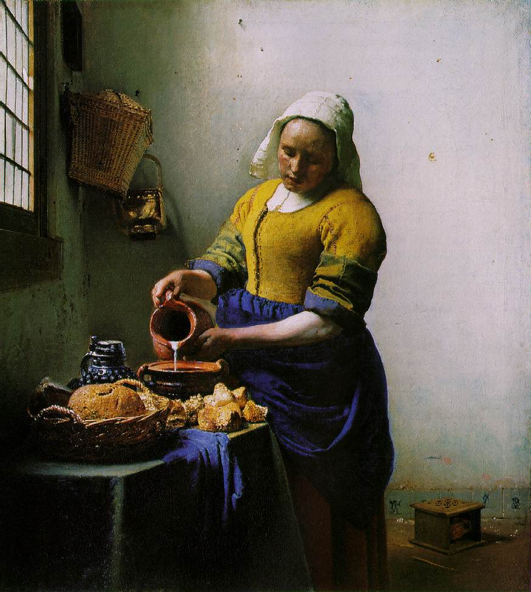
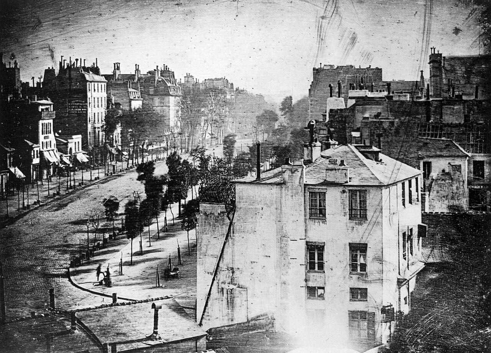
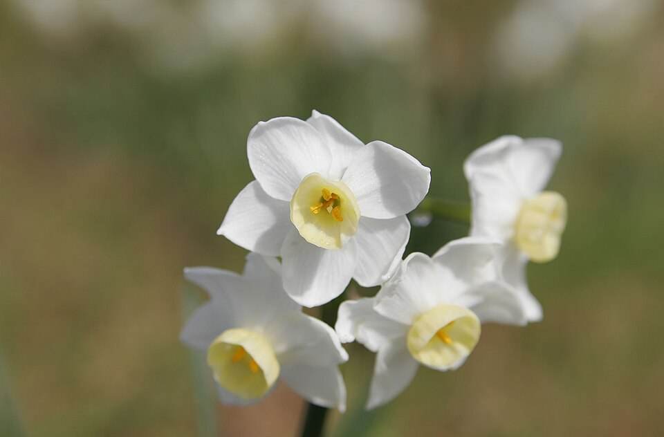
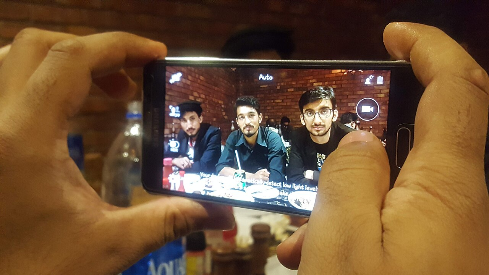
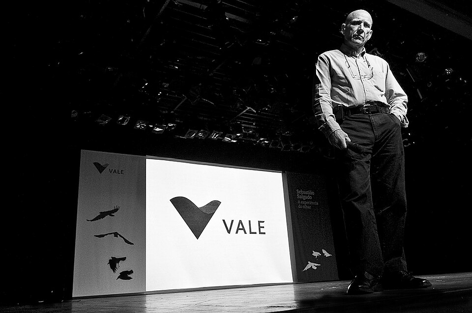

Objetivo do módulo
Conhecer a linguagem audiovisual e os fundamentos técnicos da fotografia: ler e analisar imagens, entender como a câmera funciona e dominar exposição, enquadramento e composição.
Parte 1
A arte antes da foto: a luz na pintura
Antes de existir a fotografia, os artistas já estudavam profundamente uma coisa que é o coração da nossa arte: a luz. Entender como pintores usaram luz e sombra ao longo da história treina o seu olhar para perceber de onde vem a luz e como ela cria volume, drama e emoção.
Ao longo dos movimentos artísticos — Renascimento, Barroco, Rococó, Neoclassicismo, Romantismo, Realismo, Impressionismo, Arte Moderna, Contemporânea e Pop Art — a forma de tratar a luz mudou junto com a sociedade. Repare especialmente na técnica do claro-escuro (chiaroscuro): o contraste forte entre áreas iluminadas e escuras que dá tridimensionalidade e dramaticidade à cena.


Ao ver uma pintura (ou uma foto), pergunte-se: De onde vem a luz? É dura ou suave? Cria sombras marcadas ou um clima difuso? Esse mesmo raciocínio você vai usar para fotografar — é o tema central do Módulo 2.


Parte 2
A história da fotografia
A palavra fotografia vem do grego: photos (luz) + graphein (escrever) — literalmente, “escrever com a luz”. Mas a ideia nasceu muito antes da química que fixa a imagem.
O princípio: a câmera escura de orifício
Desde a Antiguidade já se conhecia a câmera escura (camera obscura): um ambiente ou caixa totalmente escura com um pequeno furo (orifício) numa das paredes. A luz que entra por esse furo projeta, na parede oposta, a imagem invertida do que está lá fora. Artistas usavam isso para desenhar com precisão. Faltava apenas um jeito de fixar aquela imagem.


O princípio da fotossensibilidade
A segunda peça do quebra-cabeça foi descobrir que certas substâncias (como os sais de prata) escurecem quando expostas à luz. Unindo a câmera escura (que forma a imagem) com uma superfície fotossensível (que reage à luz), nascia a possibilidade de registrar imagens permanentemente.
Os pioneiros

Joseph Nicéphore Niépce (1765–1833)
Em 1826 registrou a imagem considerada a primeira fotografia da história: “Vista da Janela em Le Gras”. A exposição durou cerca de 8 horas!

Louis J. M. Daguerre (1787–1851)
Criou o daguerreótipo (1839), processo muito mais rápido e nítido. Sua “Boulevard du Temple” traz a primeira pessoa fotografada da história — o homem que parou para engraxar os sapatos.
Pouca gente sabe: o francês radicado em Campinas Hercule Florence chegou a um processo fotográfico de forma independente e isolada, por volta de 1833 — e foi ele quem cunhou a palavra “photographie”. A descoberta ficou esquecida por mais de 150 anos, mas hoje é reconhecida como parte essencial da história da fotografia.
Da fotografia analógica à digital
Por quase 200 anos a fotografia foi analógica: a luz sensibilizava um filme químico, revelado depois em laboratório. A grande virada veio com a fotografia digital: no lugar do filme, um sensor eletrônico converte a luz em dados, e a imagem fica pronta na hora.
| Aspecto | Analógica (filme) | Digital (sensor) |
|---|---|---|
| Captação da luz | Filme fotossensível | Sensor eletrônico |
| Resultado | Precisa revelar em laboratório | Imagem imediata na tela |
| Custo por foto | Cada clique custa filme | Praticamente zero |
| Quantidade | Limitada (24/36 poses) | Milhares de fotos |
| Edição | Química, no laboratório | Digital, no próprio aparelho |
O smartphone é o ápice dessa evolução: um misto de computador, telefone e câmera digital que mudou para sempre o modo como criamos e compartilhamos imagens.
Parte 3
Fisiologia do olhar: o olho e a câmera
Os princípios de funcionamento de uma câmera permanecem os mesmos desde a invenção: uma câmara escura com uma entrada de luz e uma superfície que fixa a imagem. Não por acaso, a câmera é uma reprodução do olho humano. Veja a correspondência:
A objetiva organiza a luz (como o cristalino), o diafragma controla a entrada de luz (como a íris) e o sensor recebe a imagem (como a retina).
A imagem se projeta invertida (de cabeça para baixo) dentro do olho e da câmera — é assim em qualquer sistema óptico. No olho, o cérebro faz a correção; na câmera, isso é feito por espelhos, prismas e pelo processamento do sensor.
Parte 4
As partes da câmera fotográfica
Quatro componentes trabalham juntos para que a luz refletida pelo objeto seja capturada com fidelidade:
🔭 Objetiva (lente)
Capta e conduz a luz até o sensor. O conjunto de lentes é responsável pelo foco. Cada objetiva tem uma distância focal.
⏱️ Obturador
Controla o tempo em que a luz sensibiliza o sensor — a velocidade. É ele que congela ou borra o movimento.
⭕ Diafragma
A “íris” da objetiva. Lâminas formam um orifício que regula quanta luz entra (a abertura).
📊 Fotômetro
Mede a luz da cena e calcula o melhor ajuste entre diafragma e obturador para uma exposição correta.
DSLR × Mirrorless: e o sensor?
Nas câmeras profissionais, o sensor é a peça que recebe a imagem (no lugar do antigo filme). Dois grandes tipos de câmera dominam o mercado:
| DSLR (reflex) | Mirrorless (sem espelho) | |
|---|---|---|
| Espelho interno | Sim — reflete a imagem para o visor óptico | Não — a imagem vai direto ao sensor e a um visor eletrônico |
| Tamanho/peso | Maior e mais pesada | Mais compacta e leve |
| Visor | Óptico (vê a cena real) | Eletrônico (vê já o resultado) |
Seu celular segue exatamente os mesmos princípios — só que tudo é controlado por software, não por peças mecânicas. Por isso, entender a câmera “grande” te ajuda a dominar a câmera do bolso. Vamos a fundo nisso na Parte 8.
Parte 5
Tipos de objetivas (lentes)
A distância focal (em milímetros) define o “ângulo de visão” da lente. Conhecer os tipos ajuda a entender as câmeras múltiplas do seu celular (ultra-wide, principal, tele):
| Objetiva | Característica | Indicada para |
|---|---|---|
| Normal (~50mm) | Ângulo parecido com o do olho humano | Uso geral, dia a dia |
| Grande angular | Abrange uma área de visão maior; grande profundidade de campo | Paisagens, ambientes pequenos, arquitetura |
| Teleobjetiva | Distância focal longa; aproxima o assunto distante | Esportes, natureza, retratos de close |
| Olho de peixe | Angular extrema com forte distorção arredondada | Efeitos criativos |
| Macro | Focaliza objetos muito próximos | Detalhes, insetos, flores, texturas |
| Zoom | Distância focal variável (faz vários papéis) | Versatilidade |
Parte 6 · o coração da técnica
O triângulo da exposição
Uma boa fotografia depende de uma boa exposição — a quantidade certa de luz chegando ao sensor. Ela é o equilíbrio entre três ajustes que se influenciam mutuamente. Mexeu em um, compensa no outro. Esse é o conceito mais importante de todo o curso:
Os três vértices da boa exposição. O segredo é equilibrá-los conforme a luz e a intenção da foto.
⭕ Abertura / Diafragma (f)
É o tamanho do orifício por onde a luz entra, medido em números f (f/1.8, f/2.8, f/4, f/5.6, f/8, f/11, f/16…). Atenção ao detalhe que confunde todo mundo:
O número f é inversamente proporcional ao tamanho da abertura. Ou seja:
quanto MENOR o número, MAIOR a abertura (entra mais luz). Ex.: f/1.8 é muito mais
aberto que f/16.
Aberturas maiores (números menores) deixam entrar mais luz e desfocam o fundo. Aberturas menores deixam tudo nítido.
⏱️ Velocidade do obturador
É o tempo que o obturador fica aberto, em frações de segundo: 1/30,
1/60, 1/125, 1/500, 1/1000… Quanto maior a velocidade
(fração menor), menos tempo de luz — e mais o movimento é congelado.
Velocidade lenta → efeito de rastro (água sedosa, luzes em traço). Velocidade alta → ação “parada no ar”.
📈 ISO — sensibilidade do sensor
O ISO mede a sensibilidade do sensor à luz. Quanto maior o ISO, mais sensível — útil em
ambientes escuros — mas surge o ruído (granulação). A escala vai de cerca de ISO 50
a ISO 25.000.
• 100 ISO → sol forte • 400 ISO → dia nublado • 800–3200 ISO → ambientes internos. Regra geral: use o menor ISO possível para a melhor qualidade de imagem.
| Ajuste | Valor baixo | Valor alto |
|---|---|---|
| Abertura (f) | Número pequeno = muita luz, pouca profundidade (fundo desfocado) | Número grande = pouca luz, muita profundidade (tudo nítido) |
| ISO | Fotos limpas, sem ruído / precisa de mais luz | Fotos com ruído/granulação / precisa de menos luz |
| Velocidade | Lenta: capta mais luz, efeito de rastro | Rápida: capta menos luz, congela o movimento |
Parte 7
Profundidade de campo
É a zona de nitidez à frente e atrás do assunto focado. Ela é controlada principalmente pela abertura do diafragma:
- Baixa profundidade de campo → fundo desfocado (abertura grande, f pequeno). Ótima para retratos: separa o assunto do fundo.
- Alta profundidade de campo → tudo nítido, do perto ao longe (abertura pequena, f grande). Ideal para paisagens.
Só o que estiver dentro da “zona de nitidez” fica em foco. A abertura controla o tamanho dessa zona.


Parte 8 · mão na massa
Conhecendo a câmera do smartphone
Chegou a hora de transferir tudo isso para o seu aparelho. O sensor do celular é bem menor que o de uma câmera profissional (em média 1,27 cm) — por isso, quanto maior e melhor o sensor, mais detalhes ele captura. Como o celular não tem peças mecânicas, diafragma, obturador e ISO são controlados por software.

Cada fabricante tem uma interface diferente. Para aprender os ajustes manuais de forma padronizada, usamos em aula o app gratuito Câmera FV-5 Lite (Android/iOS). Ele expõe ISO, velocidade, foco, balanço de branco, medição e histograma — exatamente o que estudamos.
O histograma
É um gráfico que indica se a exposição está correta. Ele mostra a distribuição de luz da foto, das sombras (esquerda) às altas-luzes (direita):
Massa toda à esquerda = foto escura. Toda à direita = foto “estourada”. Bem distribuída = exposição equilibrada. Mas sempre interprete também a cena!
Balanço de branco (White Balance)
Cada fonte de luz tem uma cor (temperatura, em Kelvin). O balanço de branco informa ao sensor qual é essa luz, para que o branco apareça realmente branco — sem ficar alaranjado ou azulado.
Luz quente (baixos Kelvin) puxa para o laranja; luz fria (altos Kelvin) puxa para o azul.
Foco e medição de luz
🎯 Modos de foco
Por toque (você escolhe onde focar), automático (perto/longe), ou detecção de rostos. O ícone de montanha = foco longe; flor = foco perto.
📐 Modos de medição
Matricial (média de toda a cena), ponderada ao centro ou pontual (mede só um ponto). Escolha conforme onde está a luz importante.
Dia ensolarado e você quer a bola “parada no ar”. Solução: velocidade alta para congelar
(entre 1/250 e 1/500); como há muita luz, o ISO pode ficar baixo
(100–400). No celular não dá para mexer no diafragma — então compensamos na velocidade e no ISO,
sempre observando o histograma e a imagem.
O automático resolve a maioria das situações — use-o para focar só na composição. Mas quando ele “erra” ou você quer um efeito específico, é o modo manual que te dá liberdade criativa. Por isso aprendemos como tudo funciona. Agora solte sua criatividade!
Parte 9 · composição
Enquadramento e planos
Enquadrar é decidir o que entra no quadro da foto. É um dos fatores que mais contribuem para uma boa imagem. O enquadramento depende de três elementos: o plano (distância câmera–objeto), a altura e o lado do ângulo.
Os planos definem o quanto mostramos do assunto. Veja a escala clássica, do mais aberto ao mais fechado:
Quanto mais fechado o plano, mais intimidade e detalhe; quanto mais aberto, mais contexto e ambiente.
Há ainda o plano detalhe (um close extremo de um objeto ou parte: um olho, uma aliança, a textura de uma fruta) e o plano médio curto (entre o médio e o primeiro plano).
Enquadramento com linhas e perspectivas
Aproveitar a convergência de linhas (uma rua, uma ponte, trilhos, um corredor) cria sensação de profundidade e tridimensionalidade. Muito usado em paisagem e arquitetura.

Parte 10
A regra dos terços
A técnica de composição mais conhecida. Imagine a cena dividida em 9 partes iguais, com duas linhas verticais e duas horizontais — como um “jogo da velha”. Os 4 pontos onde as linhas se cruzam são os pontos de força da imagem.
Em vez de centralizar tudo, coloque os elementos importantes sobre os pontos ou linhas. A composição fica mais dinâmica e agradável.

Quase todo smartphone tem a opção de mostrar a grade (grid) na tela da câmera. Ative-a nas configurações: ela exibe exatamente as linhas dos terços e ajuda demais a compor na hora do clique.
Parte 11
Tipos de composição
Além dos terços, há várias formas de organizar os elementos para criar imagens mais interessantes:
🪟 Enquadramento dentro do enquadramento
Usar uma janela, porta ou arco para “emoldurar” o assunto.
⚖️ Composição simétrica
Padrões que se repetem e se equilibram — naturalmente agradáveis ao olhar.
🔁 Sobreposição
Elementos em camadas (frente, meio, fundo) que dão profundidade.
↔️ Linhas horizontais, verticais e diagonais
Horizontais transmitem calma; verticais, força; diagonais, dinamismo e movimento.
🌑 Sombras
A sombra como elemento gráfico, criando contraste e mistério.
💧 Reflexos
Água, vidros e espelhos duplicam a cena e criam simetria e surpresa.

Parte 12 · inspiração
O olhar dos mestres
Para quem começa, ter referências é fundamental. Estudar quem domina a linguagem fotográfica ajuda você a construir o seu próprio estilo e identidade. Pesquise sempre — é parte do ofício.

Comece por Sebastião Salgado
O fotógrafo brasileiro mais reconhecido do mundo, mestre do preto e branco e da fotografia social e ambiental. Mas ele é só o começo: Cartier-Bresson, Annie Leibovitz, Walter Firmo, Evandro Teixeira, Luisa Dörr e outros te esperam.
Conhecer os mestres da fotografia →Caça à composição
Hora de treinar o olhar com o celular na mão. O objetivo é enxergar composição em qualquer lugar — inclusive na nossa sala de aula.
- Ative a grade (grid) da câmera do celular para ver as linhas dos terços.
- Faça 9 fotos, uma para cada tipo de composição que estudamos: regra dos terços, simetria, enquadramento dentro do enquadramento, sobreposição, linhas horizontais, verticais, diagonais, sombras e reflexos.
- Com um colega, fotografe a escala de planos: do plano geral ao primeiríssimo plano.
- No app FV-5, fotografe a mesma cena com ISO baixo e ISO alto e compare o ruído.